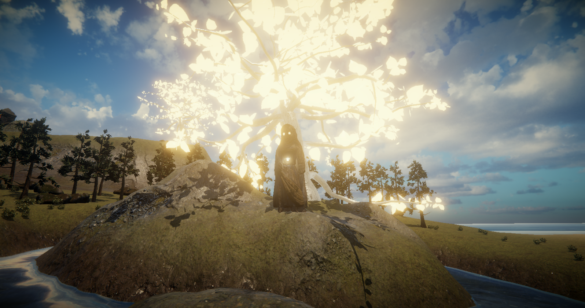
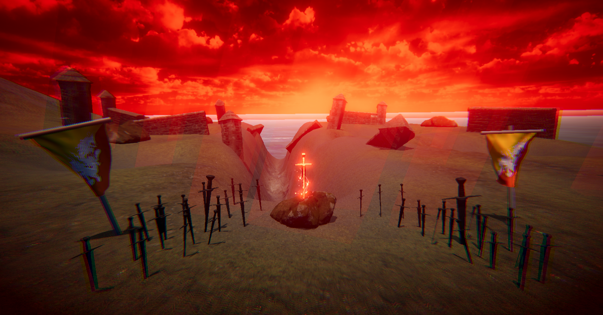

Game Project
3D environment Unity Project made with Quixel bridge
Unity
Quixel Bridge
Windows PC
6 weeks
1
Game Level Designer
This 3D environment was made in Unity and uses Quixel Bridge quality 3D assets & Unity Asset Store assets to make the environment.
The project was a solo assignment to learn about Unity's VFX and Shader Graphs while also trying to build a medieval themed environment.
For this project, I was the Game Level Designer. As such, I have used the 3D Assets & designed the layout of the environment with some unique places on the island.
Since the game was on PC, all assets can be high quality, and I have used lighting and modular building to make the environment look vibrant.
The theme of the island is Medieval Fantasy, as such there are medieval houses, blacksmith & a lumbershack present. The island also has the castle and other features around the map.
The island is inspired by Elden Ring with clear representation on the island having a World Tree with multiple smaller trees.
There are 2 interesting locations I have made on the island. The first is the holy statue, and the second is the lightning sword battlefield.
The pond is said to be blessed with holy powers if you pray to the statue. This location makes use of Unity's local volume to change the post processing effects when the player enters the area.

This place is said to be the old castle which all that remains now is a desolate battlefield with a huge sword slash carved into the Earth. This location makes use of Unity's local volume to change the post processing effects when the player enters the area. I have also used Unity's Particle System for the lightning effect on the sword.
